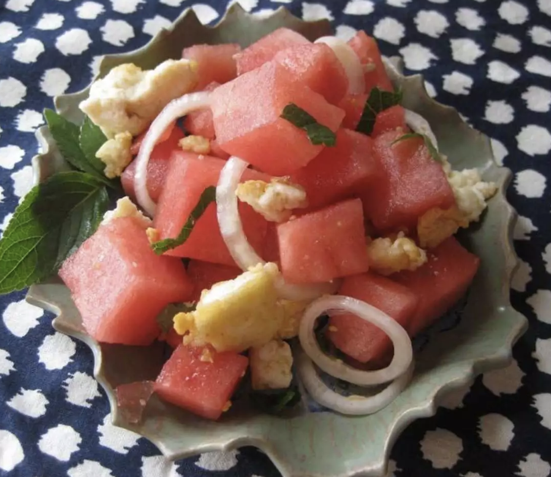

Watermelon Salad

Description
A delicious summer salad made with watermelon, halloumi cheese,
mint, and onion
Ingredients
- ½ (8.8 ounce) package halloumi cheese
- 1 teaspoon olive oil
- 3 cups cubed seeded watermelon
- 12 leaves fresh mint, sliced, or more to taste
- 1 small onion, thinly sliced
Instructions
- Break halloumi cheese into small pieces.
Heat olive oil in a skillet over medium heat.
Add halloumi and cook and stir until golden, about 3 minutes.
- Toss watermelon cubes, mint leaves,
onion slices, and fried halloumi in a salad bowl.